Simplify Firewall Management
Simplify the system. Amplify the outcome
Reimagining Cisco Secure Firewall Management Center to make
complex security management simpler, more intuitive, and
actionable helping security teams manage policies, threats,
and network intelligence with greater clarity and
confidence.
Enterprise UX
Network Security
Cisco
My Role: Design Lead & Sprint Lead
The Spark
In 2024, during a roadmap planning session, a simple customer request stopped the room: someone wanted the command-line interface back — a feature we'd deprecated years earlier.
As the Design Lead and Sprint Lead on Cisco Secure Firewall, I connected directly with the customer. The real ask quickly surfaced: they didn't actually want the CLI back, they wanted what it used to give them — a fast, direct way to find and fix a problem. The core issue became obvious:
"Troubleshooting from the GUI was like extracting a wisdom tooth."
The Context & Scale
This wasn't a problem we could ignore. Cisco Secure Firewall is one of our largest, highest-stakes products with over $1.2B in ARR, securing networks for 63,000+ customers globally. It encompasses 15 years of design, 3,000+ screens, and 5,000+ user journeys.
95%
reduction in time needed for routine firewall tasks
83%
faster incident response time
195%
ROI, with payback in under a year
A 2022 Forrester Consulting study of Cisco Secure Firewall customers — the scale this redesign had to serve without breaking.
It was built to be powerful, but it forgot to be loved. At this scale, every point of friction compounds across tens of thousands of operators every single day.
Discovery Process
This customer conversation ignited a six-week design sprint (code-named GOAT) with a 20-member cross-functional team spanning PM, Engineering, Research, Design, and Content — run as a 3-day hybrid workshop across geographies, plus two additional weeks to finalize the presentation and design assets for the executive readout.
14
Interviews with Stakeholders
The discovery phase concluded with a treasure trove of insights gathered from 14 interviews with stakeholders across executive leadership, Engineering, PM, CX, and escalations.
04
NPS Customer Recordings
Insights were further powered by 4 NPS customer recordings and TAC tickets from customers across several industries.
116
Customers in Detractors Category
The team also worked through NPS comments from 116 detractor-category customers, adding them to the clustering data alongside a mini meta-analysis from research.
06
Week Design Sprint
Discover
Define
Design
Story Visualization
Readout
Discover
Plan stakeholder interviews
Define outcome
Identify Nik, Kit & Alex's outcomes
Define
Prioritize personas
Desired product outcomes
Collect existing customer evidence
Design
Draft the presentation narrative
Compose a north-star prototype
Story Visualization
Finalize the narrative
Finish north-star prototype(s)
Readout
Finalize the pitch deck
Compile design artefacts
Prototype readiness
Presentation
20
Team Members
Working Group
A diverse team of Product Managers, Researchers, Product Designers, Engineers, and Content Designers.
3 days of hybrid workshop across geographies.
Leveraging collective experience to achieve one outcome.
We leveraged this collective experience to identify key pain points: administrators were struggling with evolving challenges like ransomware and IoT expansion, all while wrestling with a slow, unintuitive interface.
Key Decisions
Four calls that shaped how a six-week sprint turned into an 18-month, cross-org roadmap commitment.
1. Compress discovery into weeks, not quarters
With customer urgency already real, we ran the full cycle — stakeholder interviews through a north-star prototype — inside six weeks, rather than a standard multi-quarter discovery process. Research and design synthesis ran in parallel, not in sequence, across the full 20-person team.
2. Narrow to three personas, not the whole base
Six personas rely on Cisco Secure Firewall daily. Rather than solving for all six, we scoped the redesign around three — Nik, Kit, and Alex — the operators most exposed to the friction we'd identified, to keep the vision sharp enough to both pitch and build.
3. Sequence quick wins ahead of the full rebuild
Rather than pitching the complete re-architecture as one bet, the post-readout plan targeted quick wins first — running research validation and capacity planning in parallel with committing execution for the larger three-phase roadmap.
4. Institutionalize the outcome beyond the readout
A single readout doesn't move an 18-month roadmap on its own. We recorded the Day 0, Dashboard, and Troubleshooting design solutions as standalone vidcasts, and the research insights as a separate vidcast, so design leaders, researchers, and senior ICs across the wider Firewall org could reference the work directly in later roadmap discussions.
Who We Designed For
Six personas rely on Cisco Secure Firewall day to day. We mapped all six to ground the vision, then prioritized three — Nik, Kit, and Alex — as the operators most exposed to the friction we'd identified.
Nik
Network Administrator
Prioritized
Kit
IT Administrator
Prioritized
Alex
Architect
Prioritized
Sam
Security Analyst
Cam
CISO
Dee
Director
The Vision: Aided, Amplified, Actionable
Our proposal, which quickly gained executive sponsorship, was to deliver a simple yet powerful firewall management experience defined by three pillars:
Aided: Aid the customer in their configuration, troubleshooting, and analytics.
Amplified: Draw attention to capabilities that customers often don't realize exist to help them better secure their networks.
Actionable: Provide guidance to simplify and improve the overall management experience.
We framed this through the lens of a user narrative—a story of "Alex," a network administrator facing daily hurdles. This narrative helped build empathy and align the team around a cohesive north star experience.
Bringing Alex to Life
A slide of rule tables doesn't move a room the way a story does. To align a 20-person cross-functional team — and the executives funding the next 18 months — around the same problem, one of our designers hand-drew Alex's day as a four-panel narrative built from a storyboard we wrote together. It wasn't decoration; it was how we amplified the user problem into something the whole org could feel and rally behind.
"Hey! My name is Alex, one of the many network admins here at my organization, and this is my journey today."
Alex has been tasked with setting up and managing his organization's firewall infrastructure on the newly acquired Cisco Secure Firewall. His team is capable, but new to the product.
Alex's journey continues as he takes stock of the state of every system across his organization's firewall protection.
Having journeyed through the thick and thin of managing his organization's firewall, Alex stands tall — proud and accomplished, thanks to a simplified Firewall Management experience.
Inside the Sprint
High-fidelity screens are the last five percent of a sprint like this. Most of the six weeks lived on walls like these — journey-mapping the real problem, and pressure-testing our own process for finding it.
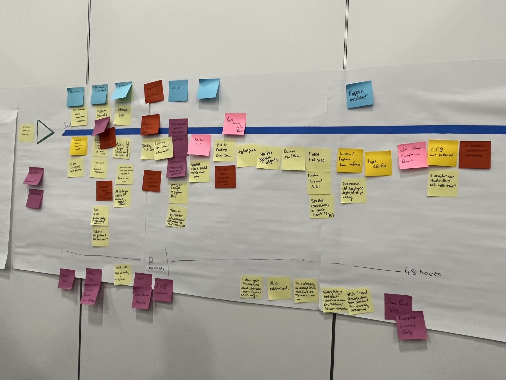
Journey-mapping a full incident response — from the first alert at minute 12 to resolution 48 hours later — to find where firewall management created friction beyond the interface itself: unclear ownership, slow leadership updates, tooling that didn't talk to each other.
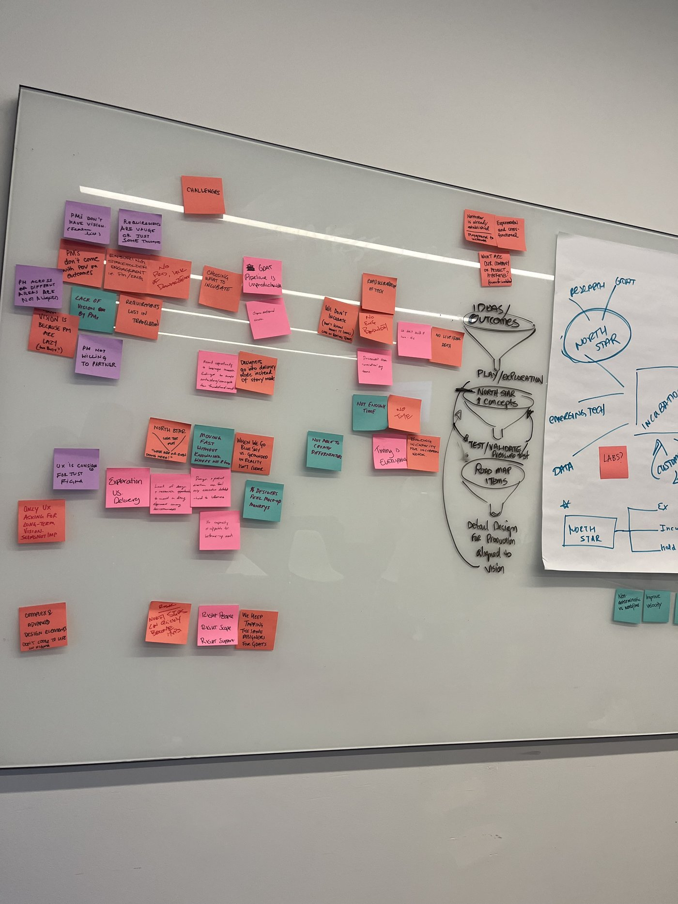
Alongside the Firewall work, we used the same room to pressure-test the GOAT format itself — what a North Star needs to test for, where ideas should move from incubation to production, and where the pipeline was actually breaking down.
Results & New Experience
We translated the vision into high-fidelity designs targeting quick wins and long-term architectural improvements, across the three P1–P3 phases: Day 0, Guided Troubleshooting, and the Actionable Dashboard. Step through each flow below.
Simplifying Day 0 Experience
We introduced a guided, step-by-step out-of-the-box experience to help admins confidently set up typical policies and get their firewall running quickly.
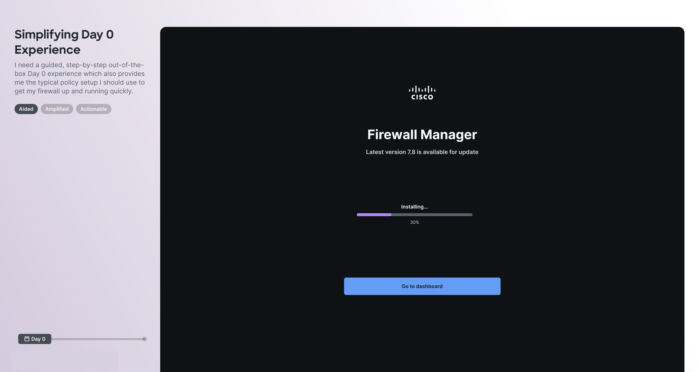
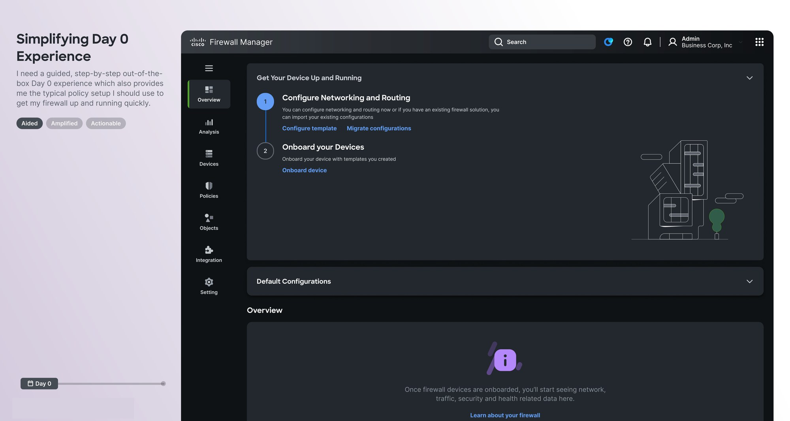
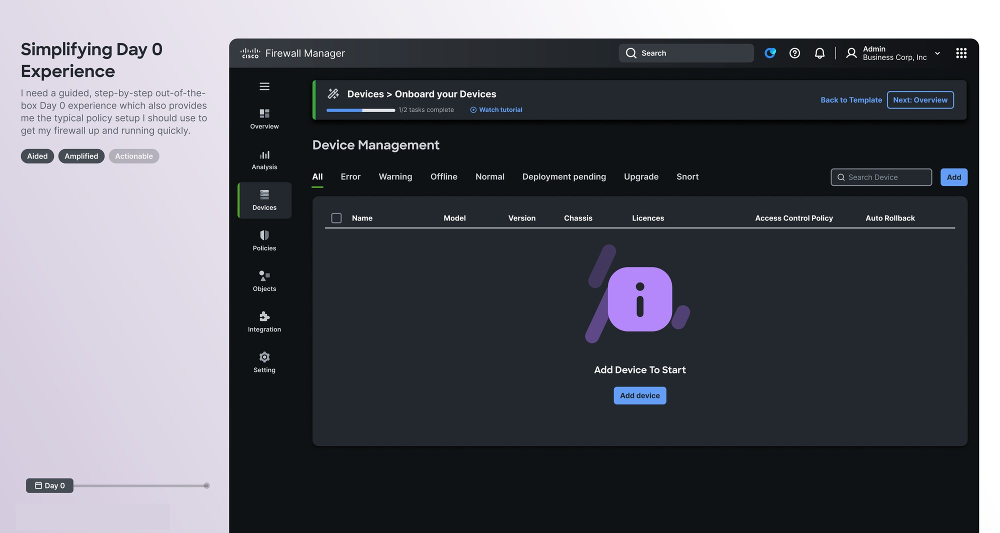
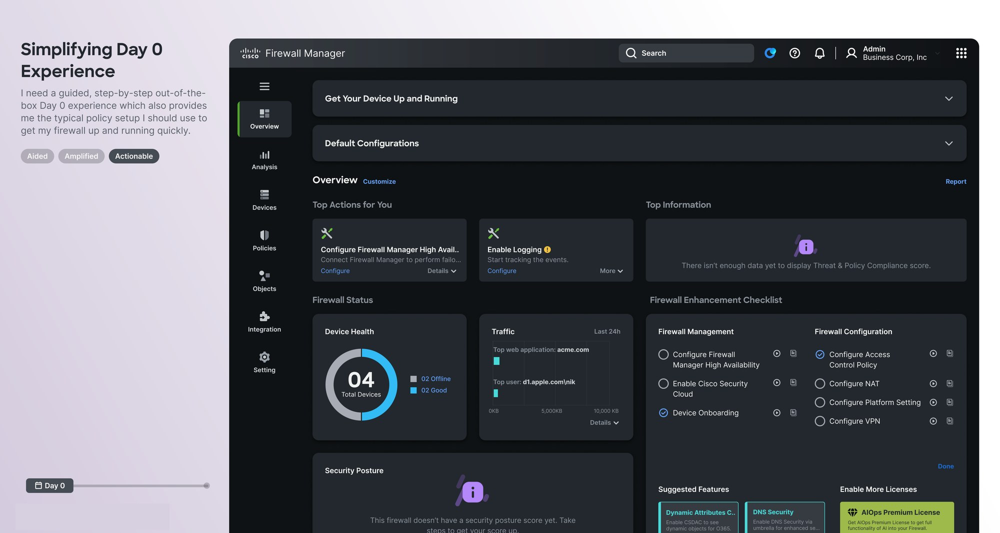
1/4
Update and install — the guided flow starts before the admin ever sees an empty console.
Guided Troubleshooting
Instead of hunting through logs, admins get a triaged ticket queue, a conversational assistant that finds the blocking rule, and a one-click path to resolution.
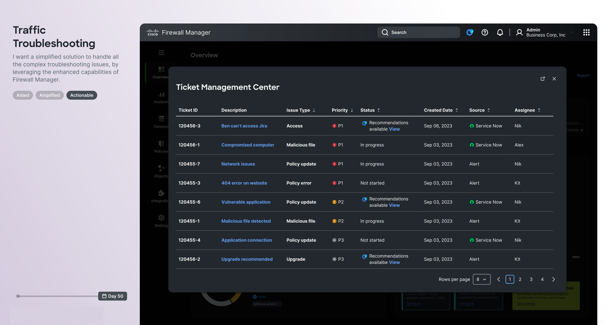
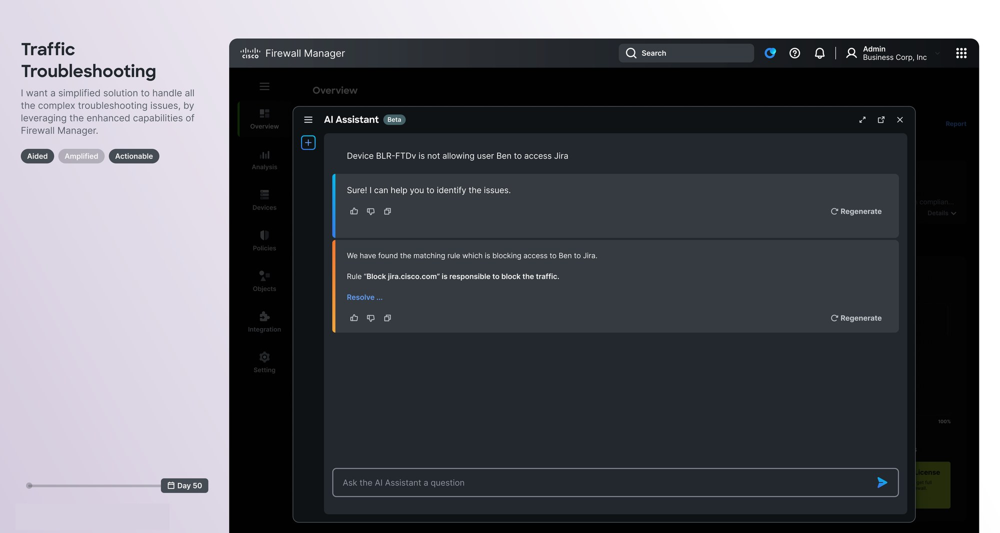
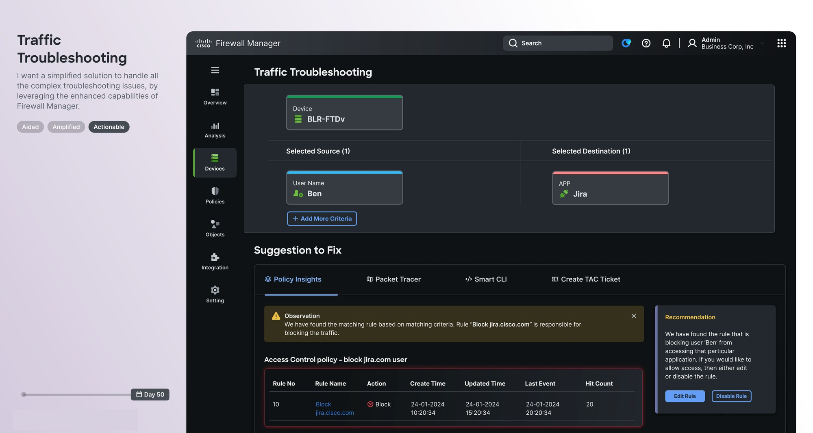
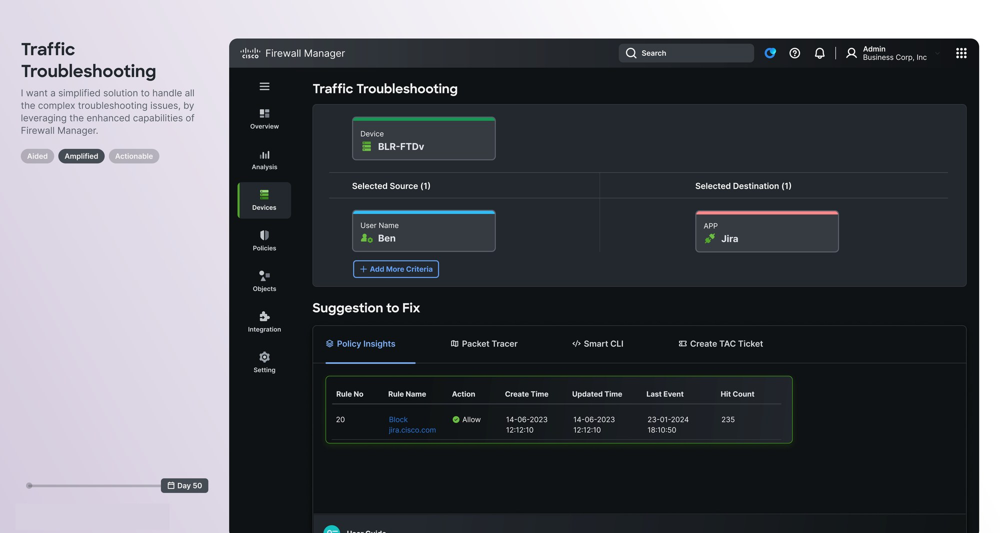
1/4
Every open issue triaged by priority, not buried across logs and tabs.
Actionable Dashboard
The new dashboard provides end-to-end visibility and instant clarity. It gives a bird's-eye view of device health and security posture while allowing admins to delve into detailed, comprehensive troubleshooting information.
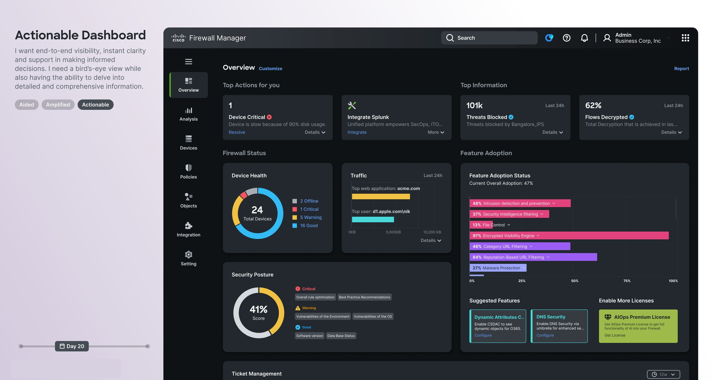
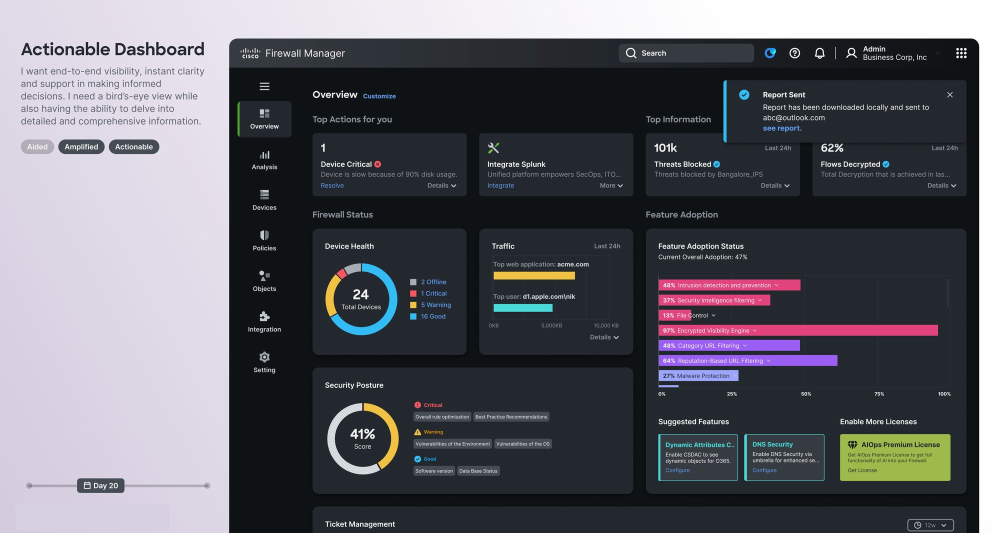
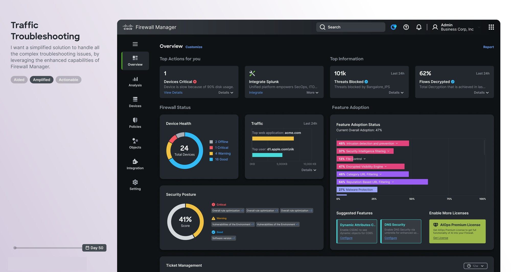
1/3
Day 20: device health, feature adoption, and threats blocked in one bird's-eye view.
Strategic Roadmap
The six-week sprint successfully redefined the vision for the next 6-8 quarters of our roadmap. We prioritized the recommendations into three phases:
P1 - Actionable Dashboard: Implementing the end-to-end visibility and instant clarity views.
P2 - Guided Troubleshooting: Easy discovery of issues with AI Assistant support and health-related remediation steps.
P3 - Day 0 Experience: Automating repetitive tasks using templates for setup and configuration.
From Roadmap to Results
The recommendations from this sprint didn't stay a pitch deck. Over the following 18 months, each phase moved through the roadmap on a quarterly cadence and grew beyond its original scope: Day 0 Experience became the foundation for a full firewall upgrade program; Guided Troubleshooting expanded into a dedicated firewall migrations and troubleshooting initiative; and the Actionable Dashboard became the foundation for Agentic Ops, a capability now adopted across 70% of the firewall base.
+47%
improvement in overall NPS
81%
of surfaced usability issues resolved
70%
adoption of Agentic Ops, the dashboard's successor capability
The remaining usability issues, surfaced by NPS customers and the Technical Assessment Center, stayed on the roadmap and continue to be addressed release by release.